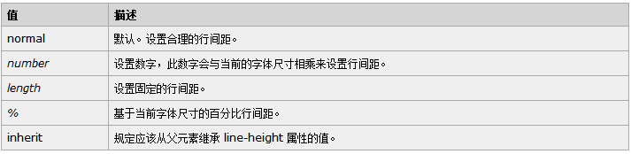
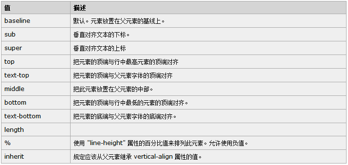

【CSS-task5】
小课堂【成都第六十三期】
line-height与vertical-align
分享人：李婷
目录
1.背景介绍
2.知识剖析
3.常见问题
4.解决方案
5.编码实战
6.扩展思考
7.参考文献
8.更多讨论
1.背景介绍
1.背景介绍
随着互联网的快速发展，人们对网页美化的追求也达到了一个新的高度，为了使网页更好看，我们需要给行内元素设置它的位置，本节课给大家分享设置文字的两个属性：line-height和vertical-align
2.知识剖析
1.line-height基本概念
定义：行高是指文本行基线baseline之间的垂直距离

1.1 line-height属性可赋值
注意：1、行高是可以被继承的，数字可以直接被继承，然后在计算行高；而百分比是先计算出行高，在以px继承
2、行高line-height实际上只影响行内元素和其他行内内容，而不会直接影响块级元素，也可以为一个块级元素设置line-height，但这个值只是应用到块级元素的内联内容时才会有影响。在块级元素上声明line-height会为该块级元素的内容设置一个最小行框高度。
2.vertical-align基本概念与应用
定义：使行内元素的基线相对于该元素所在行的基线的垂直对齐
2.1vertical-align的值
注意：vertical-align的百分比值不是相对于字体大小或者其他什么属性计算的，而是相对于line-height计算的。
3.常见问题
图像元素在块级元素底部为什么留有空白？
4.解决方案
图像的默认垂直对齐方式是基线对齐(基线对齐在原理上图像底边与匿名文本大写英文字母X的底边对齐)；而匿名文本是有行高的，所以X的底边距离行框有一段距离，这段距离就是图像留出的空隙
1、直接修改父级line-height值为0；
2、设置为display：block；
3、设置vertical-align：top/middle/bottom;
5.编码实战
6.拓展思考
有哪些方法可以实现垂直居中？
1.单行文字垂直居中使用line-height属性
2.使用vertical-align属性实现居中
3.使用table-cell布局
4.使用padding和margin
5.使用table布局
6.使用flex弹性布局
设置父元素display:flex，使用align-items:center
7.使用绝对定位
绝对定位后设置top和left为50%，然后设置负边距
8.使用display:-webkit-box
在 content 元素外插入一个 div。设置此 div height:50%; margin-bottom:-contentheight;。content 清除浮动，并显示在中间。
7.参考文献
参考一：line-height 和 vertical-align 行高与行对齐精解
参考二：深入理解line-height与vertical-align
参考三：纯CSS实现垂直居中的几种方法
8.更多讨论
有没有其他的方法实现垂直居中？
鸣谢
感谢大家观看
BY : 李婷